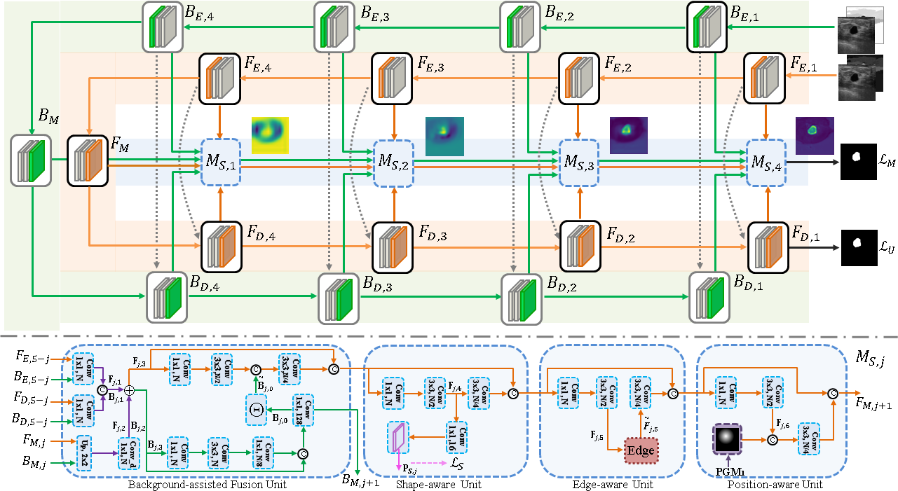

|
Shengzhou Zhong
2021

[IEEE TMI] Zhenyuan Ning, Shengzhou Zhong, Qianjin Feng, Wufan Chen, andYu Zhang.SMU-Net: Saliency-guided Morphology-aware U-Net for Breast Lesion Segmentation in Ultrasound Image. https://ieeexplore.ieee.org/abstract/document/9551285.
Deep learning methods, especially convolutional neural networks, have been successfully applied to lesion segmentation in breast ultrasound (BUS) images. However, pattern complexity and intensity similarity between the surrounding tissues (i.e., background) and lesion regions (i.e., foreground) bring challenges for lesion segmentation. Considering that such rich texture information is contained in background, very few methods have tried to explore and exploit background-salient representations for assisting foreground segmentation. Additionally, other characteristics of BUS images, i.e., 1) low-contrast appearance and blurry boundary, and 2) significant shape and position variation of lesions, also increase the difficulty in accurate lesion segmentation. In this paper, we present a saliency-guided morphology-aware U-Net (SMU-Net) for lesion segmentation in BUS images. The SMU-Net is composed of a main network with an additional middle stream and an auxiliary network. Specifically, we first propose generation of saliency maps which incorporate both low-level and high-level image structures, for foreground and background. These saliency maps are then employed to guide the main network and auxiliary network for respectively learning foreground-salient and background-salient representations. Furthermore, we devise an additional middle stream which basically consists of background-assisted fusion, shape-aware, edge-aware and position-aware units. This stream receives the coarse-to-fine representations from the main network and auxiliary network for efficiently fusing the foreground-salient and background-salient features and enhancing the ability of learning morphological information for network. Extensive experiments on five datasets demonstrate higher performance and superior robustness to the scale of dataset than several state-of-the-art deep learning approaches in breast lesion segmentation in ultrasound image.
2020
Viral Pneumonia Screening on Chest X-rays Using Confidence-Aware Anomaly Detection
Jianpeng Zhang*, Yutong Xie*, Guansong Pang, Zhibin Liao, Johan Verjans, Wenxing Li, Zongji Sun, Jian He, Yi Li, Chunhua Shen, Yong Xia (* Equal contribution)
IEEE Transactions on Medical Imaging (TMI), vol. 40, no. 3, pp. 879-890.
[arXiv]
2019
2018
2017
|